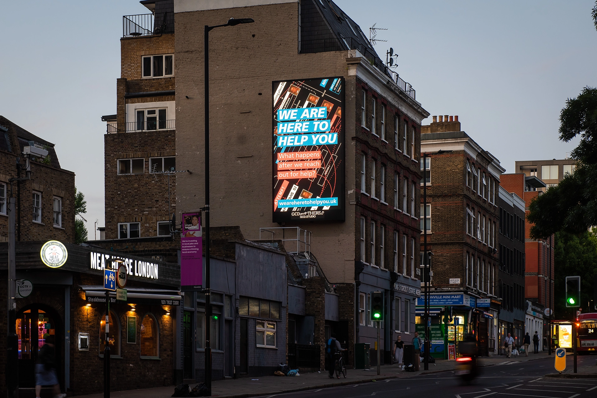
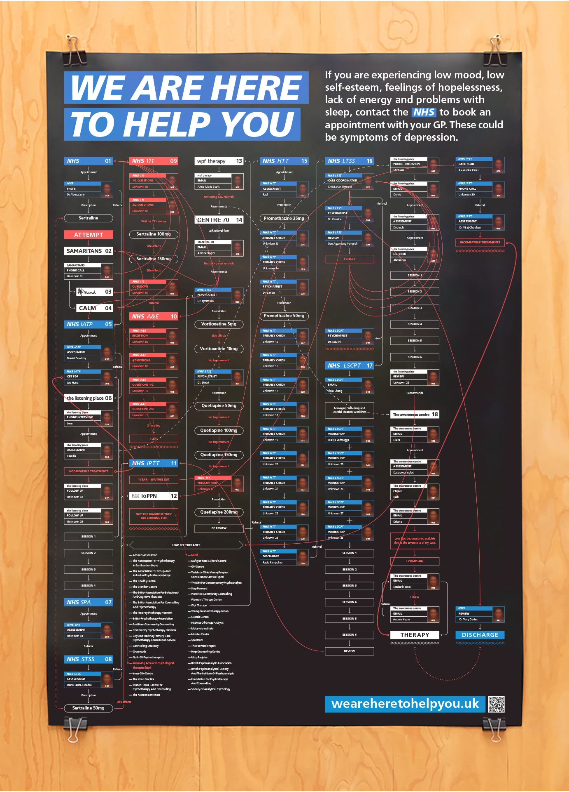
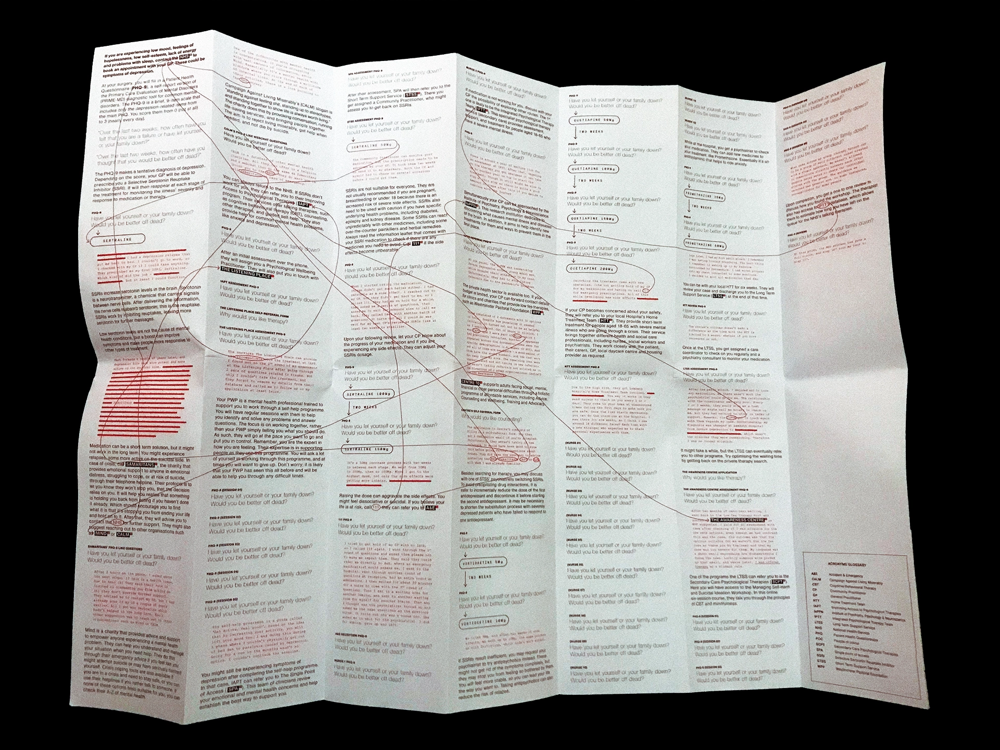

✕
Research infographics Web design + development print design 3d video

Research through Graphic Communication Design on the NHS mental health services patient application process
Photo: Max Colson
Despite the significant increase in mental health understanding over the last few years, the actual allocation of tangible resources, such as funding, facilities, and personnel, has not kept pace. This disproportion between heightened awareness and limited resources has bottlenecked the already limited public support services, making their accessibility even more challenging.
We are here to help you is a series of projects in which I revisit my personal experience applying for mental health aid from public services in the UK. The aim is to map the existing procedures and identify the obstacles patients encounter.
weareheretohelpyou.uk
The research starts by translating the journey into a flowchart and then zooms in progressively through different lenses of graphical analysis. The overarching line of inquiry, focused on understanding how aid-seeking became detrimental, is navigated through sub-queries guided by the findings from each investigative method.
100% — Diagramming
200% — Mapping
300% — Gleaning
400% — Distilling
500% — Simulating
600% — Discussing
100% — Diagramming
The foundation of the research is a flowchart that tracks the route I followed to access treatment. It includes the organisations, people and procedures I encountered across the application process, providing a bird’s-eye view of the journey and its ramifications.

A0 poster diagram
Full diagram at: Weareheretohelpyou.uk/#100
200% — Mapping
Looking closer at the process, it comes across as scripted - where each organisation plays a different role depending on the services they provide. The following text contrasts how the institutions present themselves through their marketing material with my experience as a patient.

Printed written map
Full map at: Weareheretohelpyou.uk/#200
300% — Gleaning
Most of the application is made through paperwork. I compiled the documents I was supplied with into a printed archive. It’s printed on continuous paper to embody the length of this procedure - 80m in total, taller than a 20-storey building.
Printed archive featured on GCD.Studio
400% — Distilling
Over time, I found it challenging completing the monitoring questionnaires. One of the symptoms of depression is having trouble concentrating. When we can’t focus, we tend to skim-read. I distilled one of the tests by removing five words at a time, scanning for its core messages.
Automated skimming of Patient Health Questionnaire 9 (PHQ-9)
500% — Simulating
I did find a vast amount of people out there to help me, but for some reason, meeting more carers seemed to harm me. The following experiment is a first-person virtual reality simulation which recreates a selection of moments I experienced.
Weareheretohelpyou.uk — 3D Video
600% — Discussing
What started as a personal reflection is now a discussion platform. Weareheretohelpyou.uk aims to enact change and take the conversation around mental health to its next chapter. So far, we have talked about the importance of awareness; now it’s time to work on the support services. To do so, we need to scrutinise the current system and seek ways to make it more effective.
Weareheretohelpyou.uk — Discussion forum
Reflective research through Graphic Communication
Despite the public status of these projects, the immediate nature of the research was introspective. The work depicts a reflective process in which I look back at a personal experience in an attempt to process it - in a similar way to how psychotherapy deals with trauma. Actively completing this through visual languages allows me to take steps towards understanding what happened and why it felt harmful.
The final project was presented as an interactive experience at Central Saint Martins Shows 2022.
We Are Here To Help You at Central Saint Martins Shows 2022